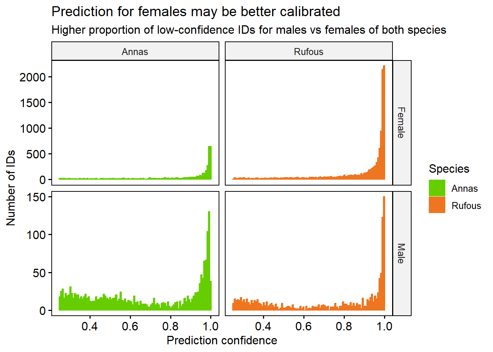
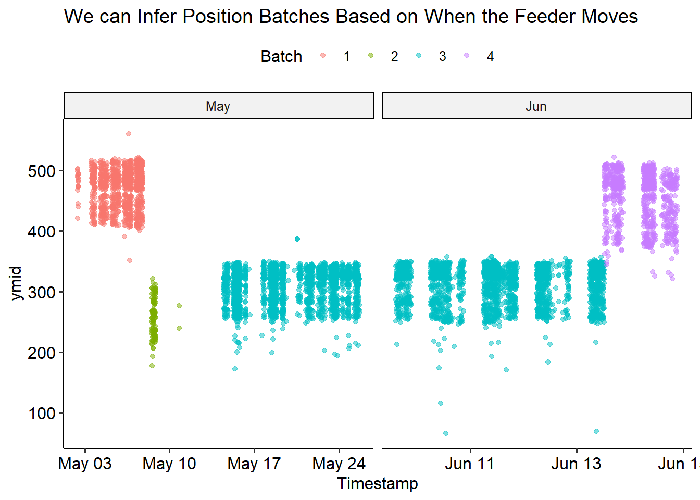
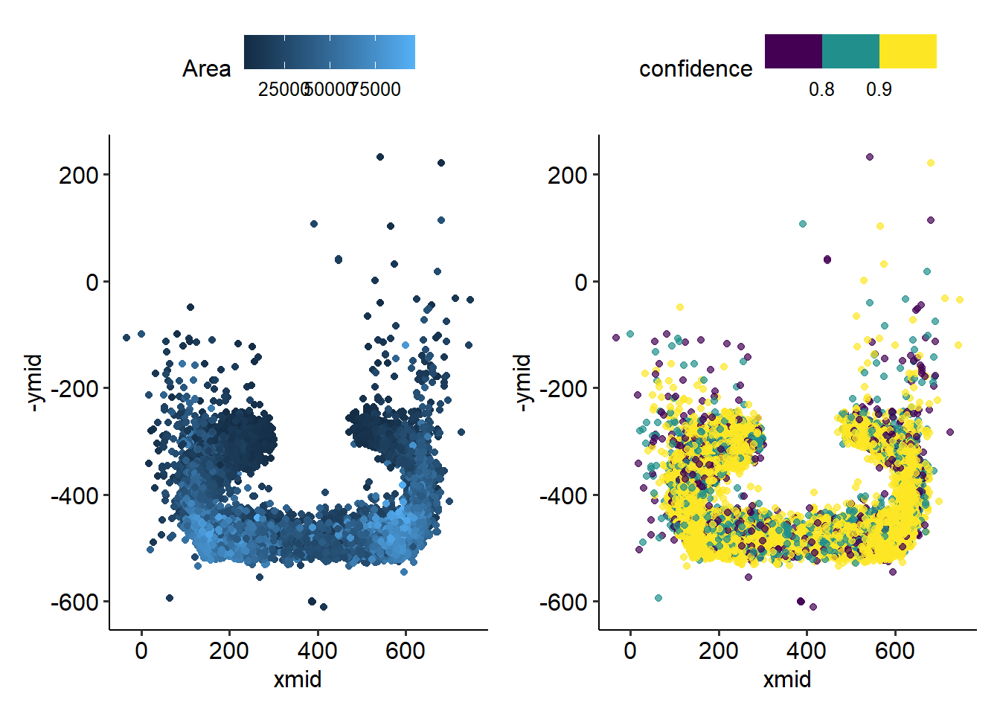
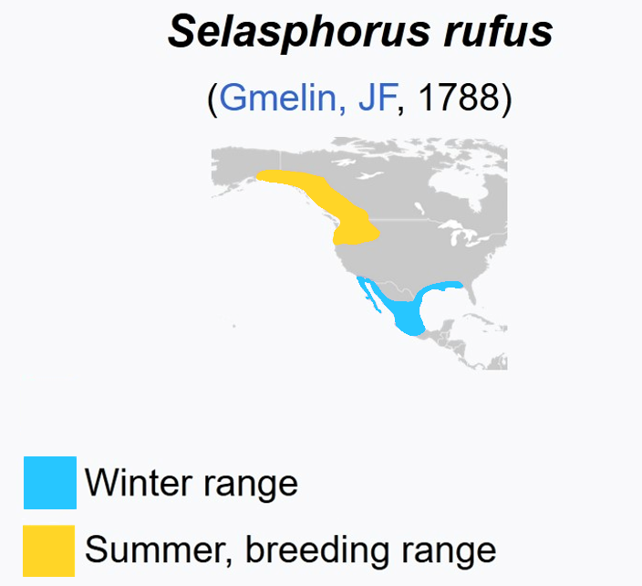
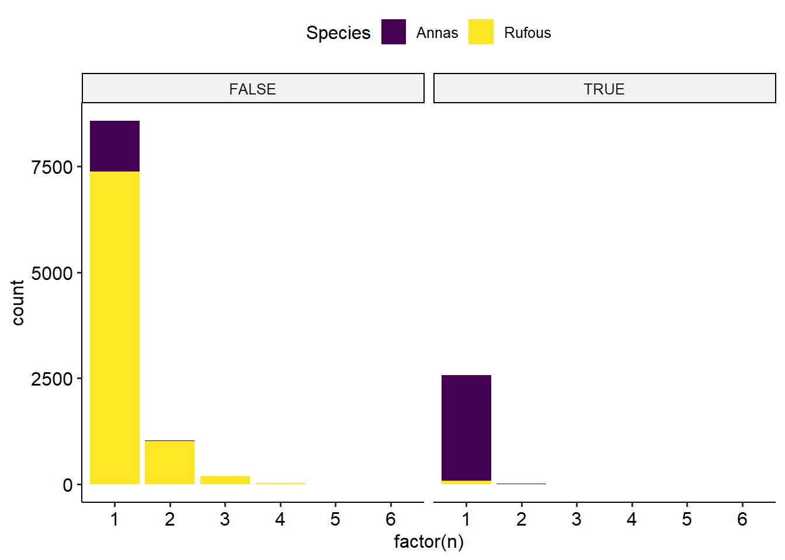
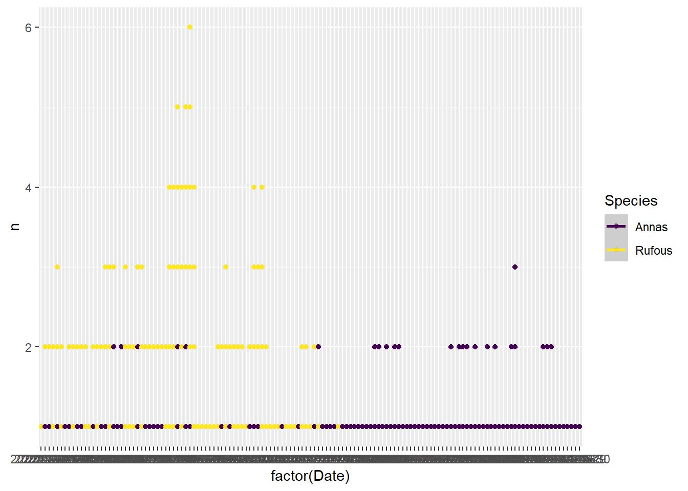
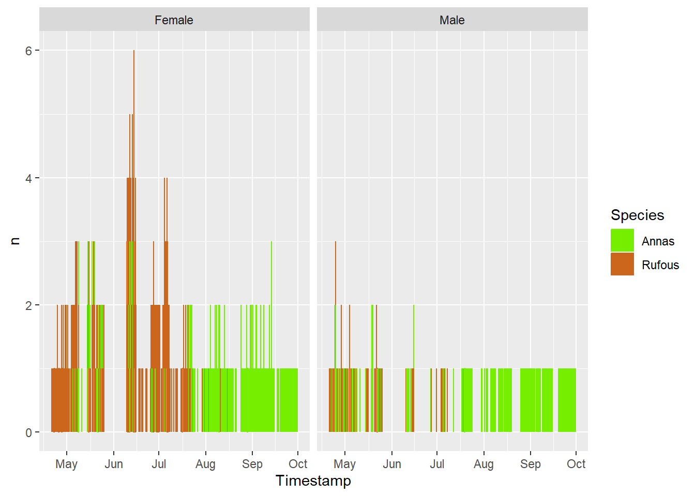

Code
library(tidyverse)
library(lubridate)
library(patchwork)
library(ggpubr)Reading time: 16 minutes
All the data analyzed here was collected in 2021. In the future, we may be able to learn more by comparing across different years. We have images from the hummingbird feeder, and micro-climate data collected from the weather station.
This first data preparation post might be a bit dry. Luckily you don’t need to read it to understand the rest of the series. Jump straight to part ii for the juicy stuff!
There are two species of hummingbirds found near Galiano: the green Anna’s Hummingbird and the orange Rufous Hummingbird. ID images from allaboutbirds.org.


We set up a camera to capture these feathery fellows visiting our hummingbird feeder.

We trained a classifier to detect who’s who….


And we’re even able to keep track of when the feeder needs a refill!

For now, lets dive in to some of the data we’ve collected!
We’ll read in our data: the classifier output as well as bounding boxes of detected birds.
library(tidyverse)
library(lubridate)
library(patchwork)
library(ggpubr)Read in and prepare the camera data
# classifier labels
classes = c('Rufous_Male', 'Annas_Male', 'Person', 'Annas_Female', 'Rufous_Female')
# read in bird detection data, and do some basic data cleaning
bird <- #read_csv('https://raw.githubusercontent.com/teaswamp-creations/galiwatch.ca/quarto-website/posts/hummer-behaviour-170323/2021_reprocessed_hummers_combo_2023.csv') %>%
read_csv('2021_reprocessed_hummers_combo_2023.csv') %>%
# lookup labels
mutate(class = classes[label + 1]) %>%
# put columns into tidy format
separate(class, into=c('Species', 'Sex'), sep='_') %>%
separate(image, into=c('Date', 'image'), sep="_", remove = F) %>%
separate(image, into=c('hhmm'), sep=".jpg", extra = 'drop') %>%
# clean up timestamps
mutate(Timestamp = ymd_hm(paste(Date, hhmm))) %>%
# remove people
filter(label != 2) %>%
# change column types, correct for variable image size
mutate(Date=ymd(Date),
Month=factor(month(Date, label = T)),
Hour=hour(Timestamp),
Species = ordered(Species),
Sex = factor(Sex),
MergeTime = floor_date(Timestamp, 'hour'),
# y values are flipped
xmid = (xmax+xmin)/2,
ymid = (ymax+ymin)/2
) Rows: 19226 Columns: 11
-- Column specification --------------------------------------------------------
Delimiter: ","
chr (2): image, Mo
dbl (9): xmin, ymin, xmax, ymax, label, confidence, x_size, y_size, OK
i Use `spec()` to retrieve the full column specification for this data.
i Specify the column types or set `show_col_types = FALSE` to quiet this message.Warning: Expected 2 pieces. Missing pieces filled with `NA` in 506 rows [16, 23, 124,
134, 135, 140, 269, 272, 275, 284, 285, 289, 351, 381, 391, 394, 401, 437, 505,
519, ...].Lets take a peek at the data.
The bird detector gives us the the bounding box of each bird in an image, and the predicted sex and species of the bird. Note that because it’s hard to distinguish female birds from the immature males, there are likely some which are misclassified.
knitr::kable(head(bird))| Date | hhmm | xmin | ymin | xmax | ymax | label | confidence | x_size | y_size | Mo | OK | Species | Sex | Timestamp | Month | Hour | MergeTime | xmid | ymid |
|---|---|---|---|---|---|---|---|---|---|---|---|---|---|---|---|---|---|---|---|
| 2021-04-20 | 1651 | 154 | 365 | 331 | 514 | 0 | 0.8494033 | 820 | 616 | 04 | 1 | Rufous | Male | 2021-04-20 16:51:00 | Apr | 16 | 2021-04-20 16:00:00 | 242.5 | 439.5 |
| 2021-04-20 | 1706 | 200 | 382 | 406 | 478 | 0 | 0.8925107 | 820 | 616 | 04 | 1 | Rufous | Male | 2021-04-20 17:06:00 | Apr | 17 | 2021-04-20 17:00:00 | 303.0 | 430.0 |
| 2021-04-20 | 1718 | 634 | 401 | 814 | 552 | 0 | 0.9755894 | 820 | 616 | 04 | 1 | Rufous | Male | 2021-04-20 17:18:00 | Apr | 17 | 2021-04-20 17:00:00 | 724.0 | 476.5 |
| 2021-04-20 | 1914 | 164 | 389 | 368 | 507 | 0 | 0.6146710 | 820 | 616 | 04 | 1 | Rufous | Male | 2021-04-20 19:14:00 | Apr | 19 | 2021-04-20 19:00:00 | 266.0 | 448.0 |
| 2021-04-20 | 1925 | 196 | 389 | 408 | 472 | 0 | 0.9455948 | 820 | 616 | 04 | 1 | Rufous | Male | 2021-04-20 19:25:00 | Apr | 19 | 2021-04-20 19:00:00 | 302.0 | 430.5 |
| 2021-04-20 | 1942 | 177 | 402 | 378 | 539 | 0 | 0.9968680 | 820 | 616 | 04 | 1 | Rufous | Male | 2021-04-20 19:42:00 | Apr | 19 | 2021-04-20 19:00:00 | 277.5 | 470.5 |
Our bird detector ID’d lots of visitors! Each ID represents a bird captured in an image, and not necessarily an individual. The images are captured once every minute, so if for example a single bird sat at the feeder for two minutes in a row, it would get counted twice. There may be multiple birds in a single image.
n_table <- bird %>%
group_by(Species, Sex) %>%
summarise('Number of ids' = n(), .groups = 'keep')
n_table %>%
kableExtra::kbl() %>%
kableExtra::kable_styling(full_width = F)| Species | Sex | Number of ids |
|---|---|---|
| Annas | Female | 4127 |
| Annas | Male | 1792 |
| Rufous | Female | 11720 |
| Rufous | Male | 1081 |
Each bird ID is made by picking the the most likely label, based on the prediction probability. Sometimes, the classifier isn’t as confident as others. For example, it may be harder to identify a bird that is facing away from the camera. We can plot the confidences, and see which birds are the hardest to label.
bird %>%
gghistogram(x = 'confidence', fill = 'Species', color='Species', bins=100,
facet.by = c('Sex','Species'), scales = 'free_y', alpha=1, position='stack') +
labs(title = 'Prediction for females may be better calibrated',
subtitle = 'Higher proportion of low-confidence IDs for males vs females of both species',
x = 'Prediction confidence', y = 'Number of IDs') +
theme(legend.position = 'right') +
scale_fill_manual(values=c('chartreuse3', 'chocolate2')) +
scale_colour_manual(values=c('chartreuse3', 'chocolate2'))
It looks like for both species, Male birds are slightly harder to identify with high confidence than Female. There are many more Female examples than Male in our data, and More Rufous than Anna.
There is almost certainly some mistakes in our classifier, including false positives (non-birds labeled as birds) and false negatives (birds that are missed)
To help make sure we’re only considering high-quality calls, we’ll pick a confidence threshold of 0.7 and only analyse the IDs above that level.
We manually looked at the images, and found that that almost all the Rufouses after September 1st are false positives, so we’ll remove these observations. Also, since we have very few IDs in October, we will drop this month from our data. Then, we’ll filter to only retain the high-confidence (> 0.7 prediction probability) bird IDs
bird <- bird %>%
filter(!(Timestamp >= ymd('2021-09-01') & Species =='Rufous')) %>%
filter(Timestamp < ymd('2021-10-01')) %>%
filter(confidence > 0.7)Lastly, we’ll sanity check the bounding boxes for their size.
bird <- bird %>%
mutate(
Height = ymax-ymin,
Width = xmax-xmin,
Area = Height * Width
)
bird %>%
gghistogram(x="Area", bins = 100) +
labs(title = 'There are some very small and some very large bounding boxes.',
subtitle = "Note also relative raity of areas at 25,000 and 50,000 pixels", y = 'Count')This distribution more or less makes sense, we see some very small bounding boxes which may be mis-calls or birds who are only half in the image. There are also some cases where a bird is partially obscured because it’s sitting behind the feeder. There are some very large bounding boxes also. I’m not sure exactly whether these are real, giant humming birds, or some kind of artifact.
Lets see if looking at the bird position with respect to the feeder helps sort this out.
We can plot the location of where each bird sits, with the proxy that a birds will be located at the center of its bounding box. The birds appear to mostly sit in a circle, around the rim of the feeder. This makes sense, as it gives the best access to the sugar water.
bird %>% ggplot(aes(x = xmid, y = -ymid, colour=y_size * x_size)) +
geom_point() +
theme_pubr() +
labs(colour = 'Image size (pixels)') +
scale_colour_binned(n.breaks=3) +
theme(legend.position = 'right', legend.direction = 'vertical') However, it looks like there are at least 2 distinct positions that the feeder was in over the summer. We’ll try to do batch correction for this, by assigning a batch number to each position, and subtract the average from the x and y direction. I think we can reasonably split the changes in position (the batches) simply by the date. This is easy to see in the ymid variable - the feeder moves twice in May, and once in June.
bird %>%
mutate(Month = month(Date, label=T)) %>%
filter(Date>'2021-05-01' & Date<'2021-06-15') %>%
ggplot(aes(x=Timestamp, y = ymid))+
geom_jitter(alpha = 0.5) +
facet_wrap("~Month", scales = 'free_x') +
theme_pubr() +
labs(title = 'Feeder Moves Up and Down in May and June')Lets split these into batches for correction.
bird$batch <- 1
bird$batch <- ifelse(bird$Timestamp > ymd_hms('2021-05-08 00:00:00'),2,bird$batch)
bird$batch <- ifelse(bird$Timestamp > ymd_hms('2021-05-11 00:00:00'),3,bird$batch)
bird$batch <- ifelse(bird$Timestamp > ymd_hms('2021-06-13 12:20:00'),4,bird$batch)
bird$batch <- factor(bird$batch)We can check it went as expected by recolouring the previous plot by batch
bird %>%
mutate(Month = month(Date, label=T)) %>%
mutate(xmid = (xmax+xmin)/2, ymid = (ymax+ymin)/2) %>%
filter(Date>'2021-05-01' & Date<'2021-06-15') %>%
ggplot(aes(x=Timestamp, y = ymid, color=batch))+
geom_point(alpha = 0.5) +
facet_wrap("~Month", scales = 'free_x') +
theme_pubr() +
labs(title = 'We can Infer Position Batches Based on When the Feeder Moves',
colour = 'Batch')
Now we’re ready to correct! We’ll transform all the x- and y- values by centering and scaling each batch. This will yield a new positioning relative to the middle of the feeder; we can no longer interpret this as the pixel index in the image. We’ll normalize the “mid” locations, then add the size of the bounding box back.
bird_scaled <- bird %>%
mutate(Month = month(Date, label=T)) %>%
mutate(Height = ymax-ymin, Width = xmax-xmin) %>%
group_by(batch) %>%
mutate(across(c(Height, Width, xmid, ymid), ~scale(.x))) %>%
mutate(xmin = xmid - Width/2, xmax = xmid + Width/2,
ymin = ymid - Height/2, ymax = ymid + Height/2)bird_scaled %>%
filter(Date>'2021-05-01' & Date<'2021-06-15') %>%
ggplot(aes(x=Timestamp, y = ymid, color=batch))+
geom_point(alpha = 0.5) +
facet_wrap("~Month", scales = 'free_x') +
theme_pubr() +
labs(title = 'Batch corrected for feeder position',
colour = 'Batch')
We can see that the correction didn’t perfectly fix things - but it looks pretty good! From now on, we’ll use the bird_scaled dataframe.
p1 <- bird %>%
ggplot(aes(x=xmid, y=ymid) ) +
stat_density_2d(aes(fill=batch), geom = "polygon", alpha=0.2) +
theme_pubr() +
labs(title = 'Bird density before batch correction', fill = 'Batch')
p2 <- bird_scaled %>%
ggplot(aes(x=xmid, y=ymid) ) +
stat_density_2d(aes(fill=batch), geom = "polygon", alpha=0.2) +
theme_pubr() +
labs(title = 'Bird density before batch correction',fill = 'Batch')
p1 | p2The gap in the middle comes from the water column - we can’t detect birds sitting behind it! Of course, we have to be somewhat careful when converting back to the coordinates of the image. I negate the y coordinates, because they count from the top of the image.
img <- jpeg::readJPEG('feeder.jpg')
bird_scaled %>%
ggplot(aes(x=xmid, y = -ymid)) +
ylim(-525,180) + xlim(0, 700) +
background_image(img) +
geom_point(colour = 'lightblue') Now that we have our corrected bounding boxes, we can go back to checking out bird sizes! However, since we z-score normalized height and width, there are some negative values. This doesn’t make sense, so we’ll bring these back to the original space by using ungroup to add back the (pooled) mean and standard deviation. At the same time, we can filter out some extreme values (>2 sd from mean).
bird_scaled <- bird %>%
mutate(Month = month(Date, label=T)) %>%
mutate(Height = ymax-ymin, Width = xmax-xmin,
original_aspect_ratio = Height/Width) %>%
group_by(batch) %>%
mutate(across(c(Height, Width, xmid, ymid), ~scale(.x))) %>%
filter(abs(Height)<=2) %>%
filter(abs(Width)<=2) %>%
ungroup() %>%
mutate(across(c(Height, Width, xmid, ymid), ~(.x * sd(bird$.x)) + mean(bird$.x))) %>%
mutate(xmin = xmid - Width/2, xmax = xmid + Width/2,
ymin = ymid - Height/2, ymax = ymid + Height/2)Warning: Using one column matrices in `filter()` was deprecated in dplyr 1.1.0.
i Please use one dimensional logical vectors instead.Since we normalized height and width independently, We should check thataspect ratio is preserved.
bird_scaled %>%
mutate(scaled_aspect_ratio = Height/Width) %>%
ggscatter(x='scaled_aspect_ratio', y='original_aspect_ratio', alpha = 0.3,
color='batch', add='reg.line', add.params = list(color='black', linetype='dashed')) +
stat_cor(label.y=3.4) +
stat_regline_equation()Pretty well correlated! There are some boxes that got warped through the normalization, especially in batch 2, but for the most part looks good.
bird_scaled %>%
gghistogram(x="log2(Height / Width)", bins = 100) +
labs(title = 'Bounding box aspect ratios after batch correction',
subtile = 'Relative rarity of values at 18,000 and 38,000',
y = 'Count') +
annotate("segment", x = -0.2, xend = -2, y = 430, yend = 430, size = 1.2,
colour = "red", arrow = arrow(type='closed', length=unit(0.04, 'npc'))) + annotate('text', label = 'wide and short', colour = 'red', x = -1, y = 450) +
annotate("segment", x = 0.2, xend = 2, y = 430, yend = 430, size = 1.2,
colour = "red", arrow = arrow(type='closed', length=unit(0.04, 'npc'))) + annotate('text', label = 'tall and thin', colour = 'red', x = 1, y = 450) +
annotate('text', label='square', x = 0, y = 450, colour = 'red')Warning: Using `size` aesthetic for lines was deprecated in ggplot2 3.4.0.
i Please use `linewidth` instead.There are more wide and short bounding boxes than tall and thin ones.
After all this filtering, here’s the final numbers of each class label:
n_table %>%
bind_cols(
bird_scaled %>%
group_by(Species, Sex) %>%
summarise(n=n(), .groups = 'keep') %>%
pull(n)
) %>%
rename(`Before filtering` = `Number of ids`,
`After filtering` = `...4`) %>%
kableExtra::kbl() %>%
kableExtra::kable_styling(full_width = F)New names:
* `` -> `...4`| Species | Sex | Before filtering | After filtering |
|---|---|---|---|
| Annas | Female | 4127 | 2924 |
| Annas | Male | 1792 | 833 |
| Rufous | Female | 11720 | 9598 |
| Rufous | Male | 1081 | 634 |
Note that because of the camera perspective, bounding box area will be affected by not only the bird size, but also its closeness to the camera.
bird_scaled %>%
mutate(Area = (Height * Width)) %>%
gghistogram(x="Area", bins = 100) +
labs(title = 'Bounding box area after batch correction',
subtitle = 'Relative rarity of values at 18,000 and 38,000 pixels',
y = 'Count')Our histogram looks a lot more smooth now. We can still see two dips, as noted previously. The dips we see around 18,000 and 38,000 bounding box size are surprising, this means that there are certain height/width combinations that are not being picked up very frequently. This may indicate that there are certain positions on the feeder at which we can’t effectively identify birds.
We see this even more clearly by plotting bird height against width.
bird_scaled %>%
ggscatter(x = "Width", y = "Height", alpha = 0.6, size=1) +
labs(title = 'Mid-sized birds are hard to call?') +
theme(legend.position = 'right', legend.direction = 'vertical') +
scale_color_ordinal(option='D')
There’s some height/widths with no birds observed at them! To check whether this may be related to out classifier’s ability to call these birds, we can colour this plot by the confidence level (recall: we already filtered the data such that all ID’s have confidence > 0.7).
bird_scaled %>%
mutate(confidence_lvl = cut(confidence, c(0.6, 0.7, 0.8, 0.9, 1), ordered_result=T)) %>%
ggscatter(x = "Width", y = "Height", add = "reg.line", alpha = 0.6, color= 'confidence_lvl', size=1,
add.params = list(color = "black", fill = "lightgray", linetype='dashed')) +
stat_cor(label.x = 25, label.y = 350) +
stat_regline_equation(label.x = 25, label.y = 330) +
labs(title = 'Mid-sized birds are hard to call?',
colour = 'Confidence Level') +
theme(legend.position = 'right', legend.direction = 'vertical') +
scale_color_ordinal(option='D')We can see that at least some of these “holes” seem to be associated with lower-confidence IDs, which is consistent with the hypothesis that they’re indicative of missing IDs from hard-to-call birds.
In terms of x location, distribution of bird sitting position is strikingly different at different confidence levels. High-confidence calls are much more concentrated at the sides of the feeder than the middle.
bird_scaled %>%
mutate(confidence_lvl = cut(confidence, c(0.6, 0.7, 0.8, 0.9, 1), ordered_result=T)) %>%
ggplot(aes(x = xmid, fill = confidence_lvl)) +
geom_density(alpha = 0.5) + theme_pubr() +
labs(title = 'X position', y = 'Density', fill = 'Confidence Level')On the other hand, it seems that those lower-confidence birds may be over-represented at the small-y (top of image) locations.
bird_scaled %>%
mutate(confidence_lvl = cut(confidence, c(0.6, 0.7, 0.8, 0.9, 1), ordered_result=T)) %>%
ggplot(aes(x = ymid, fill = confidence_lvl)) +
geom_density(alpha = 0.5) + theme_pubr() +
labs(title = 'Y position', y = 'Density', fill = 'Confidence Level')This corresponds to our low-confidence bird calls coming mostly from a mid-sized bounding box, and towards the back of the feeder.
p1 <- bird_scaled %>%
ggplot(aes(x=xmid, y = -ymid, color=Area)) +
geom_point() +
theme_pubr()
p2 <- bird_scaled %>%
ggplot(aes(x=xmid, y = -ymid, color=confidence)) +
geom_point(alpha = 0.7) +
scale_colour_binned(n.breaks=3, type = "viridis") +
theme_pubr()
p1 | p2
Notably, there are many low-confidence calls OFF the feeder. These are birds who were identified mid-flight! Makes sense that the fast-moving birds might be harder to classify.
There are also many low-confidence calls in the middle. These birds sit with their back to the camera, and may therefore be harder to identify.
We can get a sense of the dynamics at the feeder, just from the pictures we’ve taken in one summer.
Stay tuned for the next post in this series, where we’ll look into the physical characteristics of these birds!
We should keep in mind the camera position: birds in the middle of the feeder will likely result in bounding boxes that are taller, while birds on the sides may have a wider “profile view” bounding box:
::: 
Assuming that preferred sitting position is independent of bird species and sex, we can compare directly the bounding boxes of the different classes. Annas are generally larger than Rufous humming birds, and for each species, the males are smaller than the females.
bird_scaled %>%
ggplot(aes(x = Sex, y=Height, fill=Species)) +
geom_boxplot() +
theme_pubr() +
scale_fill_manual(values=c('chartreuse3', 'chocolate2')) +
stat_compare_means(method = 't.test', label.y = c(350,350))However, it’s this may be an imperfect assumption:
bird_scaled %>%
ggplot(aes(x = xmid, y=-ymid, colour = Species)) +
geom_point() +
scale_colour_manual(values=c('chartreuse3', 'chocolate2')) +
facet_wrap(~Sex) +
theme_pubr() +
labs(title = 'Annas are not identified in the middle as often as Rufous')
Annas aren’t identified in the middle as often as Rufouses are. This could be be because they don’t sit there as often, but more likely they’re just chanllenging to identify when they’re facing away from the camera.
The Anna and Rufous hummingbirds have two quite distinct migration patterns: Annas are year-round visitors to our feeder in BC, while the Rufouses tend to leave for Mexico about half way through the summer.

Adapted from Wikipedia
p1 <- bird %>%
ggplot() +
aes(x = Date, fill = Species) +
geom_histogram(bins=100, position='dodge') +
labs(y='Number of IDs', x='', title='Rufous Migrates Away in July',
subtitle = 'Annas are present in BC year-round') +
scale_fill_manual(values=c('chartreuse3', 'chocolate2')) +
#facet_wrap('~Species') +
theme_pubr()
p2 <- bird %>%
ggplot() +
aes(x = Date, fill = Species, y=after_stat(count)) +
geom_density(bw=10, position='fill', show.legend = F, colour =NA) +
labs(y='Proportion of IDs') +
scale_fill_manual(values=c('chartreuse3', 'chocolate2'))+
theme_pubr()
(p1 / p2) Here’s a map made from citizen scientist data: each blue dot is a Rufous sighting reported to iNaturalist.

The Male Rufous leave earlier than the Female: they’re almost all gone by July. The latest dates we have for manually confirmed Rufous visits are:
p1 <- bird %>%
filter(Species == 'Rufous') %>%
group_by(Month, Sex) %>%
filter(n() > 5) %>%
ggplot() +
aes(x = Month, fill = Sex, y=after_stat(count)) +
geom_bar(position='fill', colour =NA) +
labs(y='Proportion of IDs') +
scale_fill_manual(values=c('chocolate1', 'chocolate4'))+
theme_pubr() + labs(title='Rufous')
p2 <- bird %>%
filter(Species == 'Annas') %>%
group_by(Month, Sex) %>%
filter(n() > 5) %>%
ggplot() +
aes(x = Month, fill = Sex, y=after_stat(count)) +
geom_bar(position='fill', colour =NA) +
labs(y='Proportion of IDs') +
scale_fill_manual(values=c('chartreuse1', 'chartreuse4'))+
theme_pubr() + labs(title='Anna')
(p1) + (p2)
The Annas on the other hand, seem to hover around 1:3 Male to Female ID ratio, with the dramatic exception of April. This may have to do with female nesting behaviours, but we don’t know for sure.
I thought the hours of the day in which birds visit the feeder might give interesting insight into their behaviour. After poking around in the data, I found that visiting hours vary widely from month-to-month. In both species, we see a big dip in visits from 12-3pm in June. Our hypothesis is that this has to do with avoiding the sun or hottest temperatures in the middle of the day. June was an especially hot month for 2021, and there were lots of forest fires. However, it’s somewhat surprising to not also see this effect in July and August, which are generally similar to June in terms of weather.
bird %>%
filter(Species == 'Rufous') %>%
filter(Date < ymd('2021-08-01')) %>%
ggplot(aes(x=Hour, fill = Sex)) +
geom_bar(position = 'stack') + facet_wrap("~Month", scales='free_y') +
scale_fill_manual(values=c('chocolate1', 'chocolate4')) +
labs(title='Rufous visit times vary by month', y = 'Number of IDs') +
theme_pubr()
bird %>%
filter(Species == 'Annas') %>%
ggplot(aes(x=Hour, fill = Sex)) +
geom_bar(position='stack') + facet_wrap("~Month", scales='free_y') +
scale_fill_manual(values=c('chartreuse1', 'chartreuse4')) +
labs(title='Annas visit times vary by month', y = 'Number of IDs') +
theme_pubr()Now we’ll make use of the data from our weather station. I’ve created a column MergeTime in both dataframes, to make it easy to merge the bird and weather data.
Read in and prepare the weather data
weather <- #readr::read_csv('https://raw.githubusercontent.com/teaswamp-creations/galiwatch.ca/quarto-website/posts/hummer-behaviour-170323/WS_hours.csv') %>%
read_csv('WS_hours.csv') %>%
# retain only non-duplicates
distinct() %>%
# Clean up timestamps, convert to celsius
mutate(Date = ymd(Date),
MergeTime = ymd_hms(paste(Date, Time)),
`Temp C` = (`Outdoor Temperature F`-32) * (5/9)
)New names:
* `` -> `...27`Warning: One or more parsing issues, call `problems()` on your data frame for details,
e.g.:
dat <- vroom(...)
problems(dat)Rows: 18061 Columns: 27
-- Column specification --------------------------------------------------------
Delimiter: ","
chr (8): Daily Rainfall accumulation, Strike Count now, Daily Strike Count...
dbl (17): Date, Indoor Temperature F, Indoor Humidity %, Outdoor Temperatur...
lgl (1): ...27
time (1): Time
i Use `spec()` to retrieve the full column specification for this data.
i Specify the column types or set `show_col_types = FALSE` to quiet this message.The air quality measures show the concentration of particulates at three different size thresholds (in micrometers), as well as the outdoor air temperature recorded from April - December 2021.
knitr::kable(head(weather))| Date | Time | Indoor Temperature F | Indoor Humidity % | Outdoor Temperature F | Outdoor Humidity % | Wind Speed(mph) | wind direction(Degree) | Light Intensity | UV index | Daily Rainfall accumulation | Total Accumulative Rainfall | Strike Count now | Daily Strike Count | Total Strike Count | Closet Strike distance | Interference | barometric Pressure(real) | Calibrated barometric Pressure | Dew Point | Rain Rate | wind gust | Wind Speed average | Feels like | Heat Index | Wind Chill | ...27 | MergeTime | Temp C |
|---|---|---|---|---|---|---|---|---|---|---|---|---|---|---|---|---|---|---|---|---|---|---|---|---|---|---|---|---|
| 2021-02-14 | 19:00:00 | 62 | 51 | 60.7 | 47 | 0 | 93 | 0 | 0 | 0 | 0 | -- | -- | -- | 0 | -- | 29.62 | 29.91 | 38 | 0 | 0 | 0 | 58 | -- | -- | NA | 2021-02-14 19:00:00 | 15.94444 |
| 2021-02-14 | 20:00:00 | 63 | 51 | 62.8 | 48 | 0 | 93 | 0 | 0 | 0 | 0 | -- | -- | -- | 0 | -- | 29.59 | 29.89 | 42 | 0 | 0 | 0 | 61 | -- | -- | NA | 2021-02-14 20:00:00 | 17.11111 |
| 2021-02-14 | 21:00:00 | 66 | 50 | 68.7 | 46 | 0 | 99 | 0 | 0 | 0 | 0 | -- | -- | -- | 0 | -- | 29.58 | 29.89 | 46 | 0 | 0 | 0 | 67 | -- | -- | NA | 2021-02-14 21:00:00 | 20.38889 |
| 2021-02-14 | 22:00:00 | 67 | 51 | 72.0 | 42 | 0 | 99 | 0 | 0 | 0 | 0 | -- | -- | -- | 0 | -- | 29.58 | 29.90 | 47 | 0 | 0 | 0 | 71 | -- | -- | NA | 2021-02-14 22:00:00 | 22.22222 |
| 2021-02-14 | 23:00:00 | 67 | 51 | 72.1 | 42 | 0 | 99 | 0 | 0 | 0 | 0 | -- | -- | -- | 0 | -- | 29.56 | 29.88 | 47 | 0 | 0 | 0 | 71 | -- | -- | NA | 2021-02-14 23:00:00 | 22.27778 |
| 2021-02-15 | 00:00:00 | 67 | 51 | 72.8 | 41 | 0 | 99 | 0 | 0 | --.-- | 0 | -- | -- | -- | 0 | -- | 29.54 | 29.87 | 46 | 0 | 0 | 0 | 72 | -- | -- | NA | 2021-02-15 00:00:00 | 22.66667 |
Based on the visiting hours plots, it seems like there may be a temperature effect in play, especially in June. To look into this, I made some linear regressions by month. There seemed to be some strong negative correlation in the hot months of June, July, August!
Relationship between temperature and number of visits differs by month.
merge(bird, weather, all.x=T) %>%
filter(Species=='Rufous') %>%
filter(Date < ymd('2021-08-01')) %>%
group_by(Month, Hour, Species) %>%
summarise(n=n(), temp = median(`Temp C`, na.rm=T), .groups='keep') %>%
ggplot(aes(x=temp, y = n))+
geom_point(colour = 'chocolate2') +
geom_smooth(method='lm', colour = 'chocolate4') +
labs(title='Rufous', x='Temperature (C)', y = 'Number of Visits')+
facet_wrap("Month", nrow=2, scales = "free_y")+
theme_pubr()merge(bird, weather, all.x=T) %>%
filter(Species=='Annas') %>%
group_by(Month, Hour, Species) %>%
summarise(n=n(), temp = median(`Temp C`, na.rm=T), .groups='keep') %>%
ggplot(aes(x=temp, y = n))+
geom_point(colour = 'chartreuse3') +
geom_smooth(method='lm', colour = 'chartreuse4') +
labs(title='Anna', x='Temperature (C)', y = 'Number of Visits')+
facet_wrap("Month", scales = "free_y")+
theme_pubr()`geom_smooth()` using formula = 'y ~ x'Both species seem to dislike temperatures above 20 degrees C. There’s a fairly strong month-specific effect - this may reflect some behaviour changes based on the Rufous migration
This is the second post in this deep-dive series. See here for part ii
As previously covered in part i, we’re looking at the hummingbird detection data from 2021. We did some preliminary data exploration, and saw some interesting patterns in the visit times of different birds.
Rufous males can be very territorial. We’d like to know whether we can see evidence of the “chasing away” behaviour.
If this is the case, then the disappearance of the male rufous should lead to an increase in the absolute number of Annas who come (but might not affect the number of female rufous. And the later disappearance of the female rufous should also lead to an increase in the number of Annas.
Because it’s hard to see this on a minute-to-minute basis, we’ll summarize the number of Anna visits by day.
bird_c <- merge(bird_scaled, weather, all.x=T)
# number of birds per day
bird_c %>%
group_by(Date, Species, Sex) %>%
summarise(n=n(), `Temp C` = max(`Temp C`), .groups='keep') %>%
ggplot() +
aes(x = Date, y = n, fill = Sex) +
geom_bar(stat = 'identity') +
facet_wrap(~Species) +
labs(y = 'Number of bird visits', title = 'Most Rufous visit in Summer, Female Annas visit in Fall,\nMale Annas are year-round')
# Not really what happened
bird_c %>%
group_by(Date, Species, Sex) %>%
summarise(n=n(), `Temp C` = max(`Temp C`), .groups='keep') %>%
ggplot() +
aes(x = n, y = `Temp C`, colour = Sex) +
geom_point() +
geom_smooth(method = 'lm', formula = 'y~x', se = F, linetype='dashed') +
facet_wrap(~Species, scales = 'free_x') +
labs(x = 'Number of bird visits', title = 'Everyone except Female Annas prefers lower temperatures')Bird co-occurance: how many share an image with another? For each month, does the 2+ mixture match the single bird mixture
Rufouses probably chase off annas, and maybe the females more so. Seen in the seasonal trend, but this might be migration. But also seen in the difference between the ratio of membership in the single vs. multi occupancy images. See the every month the rufouses are around. Never see more than 3 annas in one image.
This is also apparent on an hourly level!
bird_scaled %>%
mutate(rufous_migrated = (Date >= ymd('2021-07-31'))) %>%
group_by(Date, hhmm, Species, Sex, rufous_migrated) %>%
summarise(n=n()) %>%
ggplot(aes(x=factor(n), fill=Species)) +
geom_bar() +
#facet_wrap(~month(Date, label = T))
facet_wrap(~rufous_migrated) +
theme_pubr()`summarise()` has grouped output by 'Date', 'hhmm', 'Species', 'Sex'. You can
override using the `.groups` argument.
bird_scaled %>%
mutate(rufous_migrated = (Date >= ymd('2021-07-31'))) %>%
filter(Species=='Annas') %>%
group_by(Date, Hour, rufous_migrated, Sex) %>%
summarise(n=n()) %>%
ggplot(aes(x=factor(n), fill=Sex)) +
geom_bar() +
#facet_wrap(~month(Date, label = T))
facet_wrap(Sex~rufous_migrated) +
theme_pubr()`summarise()` has grouped output by 'Date', 'Hour', 'rufous_migrated'. You can
override using the `.groups` argument.bird_scaled %>%
group_by(Date, Hour, Species, Sex) %>%
summarise(n=n()) %>%
ggplot(aes(x=factor(n), fill=Species)) +
geom_bar(position='fill') +
#facet_wrap(~month(Date, label = T))
facet_wrap(~Sex) +
theme_pubr()`summarise()` has grouped output by 'Date', 'Hour', 'Species'. You can override
using the `.groups` argument.fit a poisson model to each and evaluate if rate paranmeter is different!
# total number of birds per day
bird %>%
filter(Species=='Annas') %>%
mutate('Rufous Males present' = Date < ymd('2021-07-31')) %>%
group_by(Date,`Rufous Males present`, Sex, .groups='keep') %>%
summarize(n=n()) %>%
ggplot(aes(x=`Rufous Males present`, y = n)) +
geom_rect(aes(fill = Sex),xmin = -Inf,xmax = Inf, ymin = -Inf,ymax = Inf, show.legend = F) +
geom_boxplot() +
facet_wrap("~Sex") +
stat_compare_means(method = "t.test", label.y = 180, label.x = 1.3) +
geom_bracket(xmin = 1, xmax = 2, label = '', y.position = c(170)) +
theme_pubr() +
labs(title='Rufous Males are better at scaring off Female Annas than Male Annas') +
scale_fill_manual(values = c('chartreuse1', 'chartreuse4'))`summarise()` has grouped output by 'Date', 'Rufous Males present', 'Sex'. You
can override using the `.groups` argument.# average number of birds per image per day
bird %>%
filter(Species=='Annas') %>%
mutate('Rufous Males present' = Date < ymd('2021-07-31')) %>%
group_by(Date,`Rufous Males present`, Timestamp, Sex, .groups='keep') %>%
summarize(n=n()) %>%
group_by(Date, `Rufous Males present`, Sex) %>%
summarize(n=mean(n), .groups = 'keep') %>%
ggplot(aes(x=`Rufous Males present`, y = n)) +
geom_rect(aes(fill = Sex),xmin = -Inf,xmax = Inf, ymin = -Inf,ymax = Inf, show.legend = F) +
geom_boxplot() +
facet_wrap("~Sex") +
stat_compare_means(method = "t.test", label.y = 1.41, label.x = 1.3) +
geom_bracket(xmin = 1, xmax = 2, label = '', y.position = 1.4) +
theme_pubr() +
labs(title='Rufous Males are better at scaring off Female Annas than Male Annas') +
scale_fill_manual(values = c('chartreuse1', 'chartreuse4'))`summarise()` has grouped output by 'Date', 'Rufous Males present',
'Timestamp', 'Sex'. You can override using the `.groups` argument.bird %>%
group_by(Date, Timestamp, Species, .groups='keep') %>%
summarize(n=n()) %>%
#group_by(Date, Species) %>%
#summarize(n=mean(n), .groups = 'keep') %>%
ggplot(aes(x=factor(Date), y = n, colour=Species)) +
geom_point()+
geom_smooth(aes(colour =Species), method='lm', formula='y~poly(x,4)')`summarise()` has grouped output by 'Date', 'Timestamp', 'Species'. You can
override using the `.groups` argument.
bird %>%
#filter(Species=='Annas') %>%
mutate('Rufous Males present' = Date < ymd('2021-07-31')) %>%
group_by(Date, `Rufous Males present`, Species, Sex) %>%
summarize(n=n()) %>%
ggplot(aes(x=`Rufous Males present`, y = n)) +
geom_boxplot() +
facet_grid(rows =vars(Species), cols = vars(Sex), scales='free')`summarise()` has grouped output by 'Date', 'Rufous Males present', 'Species'.
You can override using the `.groups` argument.bird %>%group_by(Timestamp, Species, Sex) %>% summarize(n=n()) %>% ggplot() +aes(x = Timestamp, y=n, color = Species, fill=Species) + geom_bar(stat='identity') + facet_wrap('~Sex') +scale_color_manual(values=c('chartreuse2', 'chocolate3'))+scale_fill_manual(values=c('chartreuse2', 'chocolate3'))`summarise()` has grouped output by 'Timestamp', 'Species'. You can override
using the `.groups` argument.
bird %>%
group_by(Date, Month = factor(month(Timestamp, label=T)), Hour= hour(Timestamp), Species, Sex) %>%
summarise(n=n(), .groups='keep') %>%
group_by(Month, Hour, Species, Sex,.groups='keep') %>%
summarize(mean_n = mean(n)) %>%
ggplot(aes(x=Hour, y = mean_n, colour = Month)) +
geom_point() + geom_line() +
facet_grid(rows = vars(Species), cols = vars(Sex), scales = 'free')+
labs(y='average number of IDs per day')`summarise()` has grouped output by 'Month', 'Hour', 'Species', 'Sex'. You can
override using the `.groups` argument.bird %>%
mutate(Hour = hour(Timestamp), Month = factor(month(Timestamp, label=T))) %>%
group_by(Month, Hour, Species, Sex) %>%
summarise(n=n()) %>%
ggplot(aes(x = Hour, y = Month, fill=Month, color =Month)) +
ggridges::geom_density_ridges(alpha= 0.2) +
facet_grid(rows = vars(Species), cols = vars(Sex))`summarise()` has grouped output by 'Month', 'Hour', 'Species'. You can
override using the `.groups` argument.
Picking joint bandwidth of 2.43
Picking joint bandwidth of 2.45
Picking joint bandwidth of 2.41
Picking joint bandwidth of 1.93bird %>%
mutate(Hour = hour(Timestamp), Month = factor(month(Timestamp, label=T))) %>%
ggplot() +
aes(x=Hour, fill=Month) +
geom_bar() +
theme_pubr() + theme(legend.position = 'right') +
facet_wrap('~Species', scale='free') +
labs(x = 'Hour of Day', y = 'Count', title = 'Daylight changes over the months!')